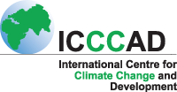
icccad.net
Project details
ICCCAD. Digital home for climate research, learning, and action in Bangladesh.

ICCCAD. Digital home for climate research, learning, and action in Bangladesh.
Gobeshona Conference. A digital platform for climate research exchange, dialogue, and collaboration.
LUCCC. A clear digital presence for leadership in urban climate change work.
Jolobayu Barta. A one-stop source for climate change information in Bangladesh.
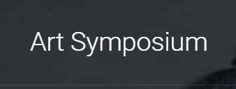
Art Symposium for Youth. A creative digital space connecting young people, art, and climate action.
A knowledge portal bringing climate evidence, voices, and resources together.
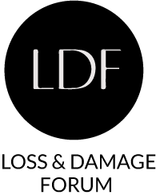
Loss & Damage Forum. A focused platform for a global climate conversation.
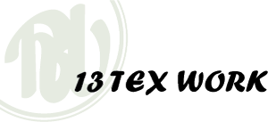
13 Tex Work. A freelance web project for an export-oriented garments industry.
Euro Bengal Group. Consultancy support and mail solution services for a growing business group.
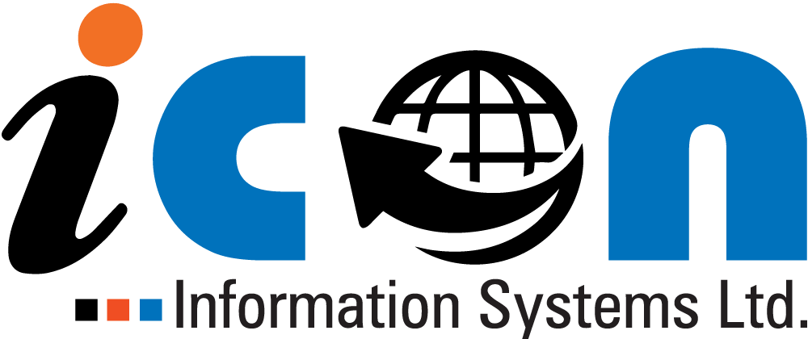
Icon Information Systems. Website development and technology delivery for an information systems company.
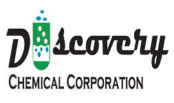
Discovery Chemical. Website and corporate design support for a specialist chemical company.
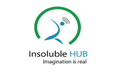
Insoluble HUB. A focused website design project for a digital venture.
International Specialised School. Website support for an international education organisation.
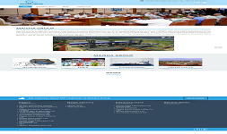
Maisha Group. A corporate website for a reputed business house in Bangladesh.
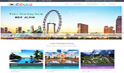
Titanic Holidays. A clearer digital front door for a travel agency.
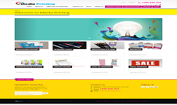
iMedia Printing. An e-commerce website made for fast decisions and repeat orders.
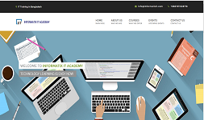
Informatix IT Academy. A website project for an IT education and training organisation.
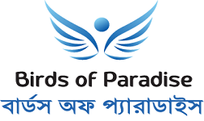
Birds of Paradise. A website design project for a special children’s school.
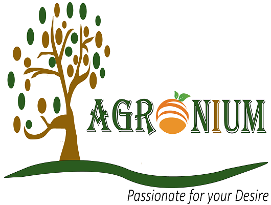
Agronium. Corporate design and e-commerce website development.
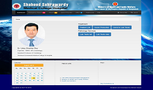
An interactive healthcare web app available to discuss on request.
Fast, responsive websites and durable content systems that are easy to manage.
Clear interfaces, thoughtful structure, and journeys that respect people’s time.
From custom web apps to digital platforms and knowledge hubs, I turn complex requirements into useful tools.